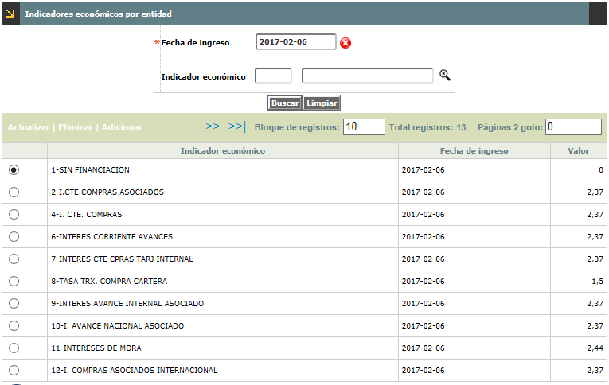
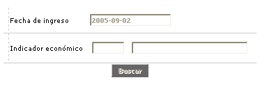
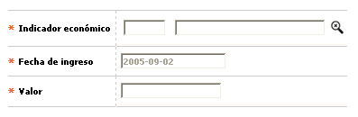
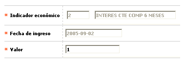

Indicadores económicos (corporativos) |
Mediante esta función se habilita la consulta y mantenimiento de la tabla corporativa o de cada entidad, dependiendo de la opción del menú desde la cual es invocada, en la cual se almacena el valor absoluto, para cada uno de los indicadores económicos "oficiales" vigentes para o a partir de la fecha señalada. El valor absoluto puede corresponder a un valor base o ser el resultado de una fórmula previamente definida en la opción Tipos de tasas e indicadores en las Tablas corporativas. Al igual que los valores de las tasas de cambio, es necesario realizar diariamente, a primera hora, la actualización de los indicadores básicos para el correcto funcionamiento del sistema.

El formulario contiene las opciones Actualizar, Eliminar, Adicionar y Detalle. Adicionalmente cuenta con un filtro de búsqueda y el botón Copiar indicadores del d�a anterior en la parte inferior, que permite replicar los valores definidos el día anterior, si existen, facilitando de esta manera la actualización de los mismos.
Filtro: Se pueden realizar consultas a través de las siguientes opciones:

Fecha de ingreso |
Campo en formato fecha YYYY/MM/AA, que contiene por defecto la fecha actual del sistema. |
Indicador económico |
Campo obligatorio que contiene lista de valores poblada a través de la opción tipos de tasas e indicadores de la que se selecciona el código (o nombre) asignado a cada uno de los indicadores económicos requeridos. |
Adicionar: Si el usuario invoca la opción Adicionar se despliega un formulario con los siguientes campos:

Indicador económico |
Campo obligatorio que contiene lista de valores poblada a través de la opción tipos de tasas e indicadores de la que se selecciona el código (o nombre) asignado a cada uno de los indicadores económicos requeridos. Al ingresar un código se valida contra la lista; aquellos que no aparecen en la lista corresponden a indicadores que son el resultado de cálculos basados en algunas de éstas cifras. |
Fecha de ingreso |
Campo obligatorio que despliega la fecha seleccionada del calendario, apareciendo por defecto la del día actual. |
Valor |
Campo numérico obligatorio, que en un máximo de seis enteros y seis decimales permite registrar el valor porcentual válido para cada indicador económico tipo base. |
Actualizar: Si el usuario invoca la opción Actualizar se despliega un nuevo formulario en el cual el único campo modificable es: Valor.

Copiar indicadores del día anterior: Utilitario que permite replicar los valores para los diferentes indicadores económicos definidos el día anterior, si existen, y solamente modificar aquellos cuyos valores hayan variado.